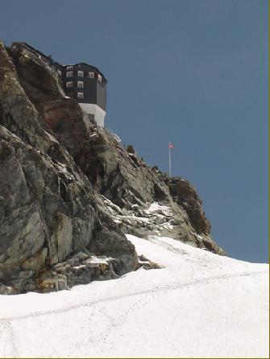

<!doctype html public "-//IETF//DTD HTML 2.0//EN"><html><head><meta http-equiv="imagetoolbar" content="no"><meta http-equiv="Content-Language" content="nl"><meta http-equiv="Content-Type" content="text/html; charset=windows-1252"><meta name="Generator" content="Microsoft FrontPage 5.0"><meta name="ProgId" content="FrontPage.Editor.Document"><title>Valpelline - Val d'Hérens 6</titl<!-- Matomo -->
<script type="text/javascript">
  var _paq = window._paq || [];
  /* tracker methods like "setCustomDimension" should be called before "trackPageView" */
  _paq.push(["setDocumentTitle", document.domain + "/" + document.title]);
  _paq.push(['trackPageView']);
  _paq.push(['enableLinkTracking']);
  (function() {
    var u="https://adsrv.innocraft.cloud/";
    _paq.push(['setTrackerUrl', u+'matomo.php']);
    _paq.push(['setSiteId', '51']);
    var d=document, g=d.createElement('script'), s=d.getElementsByTagName('script')[0];
    g.type='text/javascript'; g.async=true; g.defer=true; g.src='//cdn.innocraft.cloud/adsrv.innocraft.cloud/matomo.js'; s.parentNode.insertBefore(g,s);
  })();
</script>
<noscript><p></p></noscript>
<!-- End Matomo Code --></head>d><body bgcolor="#ffffff" link="#0066ff" vlink="#6633cc" text="#000000" topmargin=0 leftmargin=0 onmouseover="return true" onload="jh()"><script language="JavaScript" type="text/javascript"><!--
function ncm(){return false}function qp(){alert(unescape("Copyrights !  You are not allowed to download pictures - Het ophalen van afbeeldingen is verboden."));return false}function cn(){fg=event.button;if(fg==2||fg==3)qp()}function pq(e){return(e.which==3)?qp():true}vb=document.all;ls=document.getElementById;function jh(){if(document.images){for(zu=0;zu<document.images.length;zu++){if(vb){if(ls){document.images[zu].oncontextmenu=qp}else{document.images[zu].onmousedown=cn}}if(ls&&!vb){document.images[zu].onmouseup=ncm;document.images[zu].oncontextmenu=ncm}if(document.layers){document.images[zu].onmousedown=pq}}}}//--></script> <a name=top></a> <table border=0 cellpadding=0 cellspacing=0><tr><td></td><td></td><td></td><td></td><td></td><td></td><td></td><td></td><td></td><td></td><td></td><td></td><td></td><td></td></tr><tr><td width=9 height=9></td><td width=157></td><td width=7></td><td width=121></td><td width=8></td><td width=5></td><td width=10></td><td width=27></td><td width=7></td><td width=151></td><td width=4></td><td width=2></td><td width=2></td><td width=4></td></tr><tr><td height=47></td><td width=497 height=47 colspan=10 rowspan=1 valign=top align=left> <table border=0 cellpadding=0 cellspacing=0><tr><td width=496 height=47 valign=top align=left bgcolor=#658c9a> <table border=0 cellpadding=0 cellspacing=0><tr><td width=3 height=3></td><td width=489></td><td width=3></td></tr><tr><td height=39></td><td width=489 height=39 valign=top align=left> <p align=center><center><font face="Arial" color=#ffffff size=3><B>Door Valpelline en Val d'Hérens, tussen Chamonix en Zermatt.</B></font><font face="Arial" color=#ffffff size=4><B><br></B></font><font face="Arial" color=#ffffff size=2><B>&copy; 2004 Peter De Smedt</B></font><font face="Arial" color=#ffffff size=4><B><br></B></font> </td><td></td></tr><tr><td height=3></td><td colspan=2></td></tr></table> </td></tr></table> </td><td colspan=3></td></tr><tr><td height=4></td><td colspan=13></td></tr><tr><td height=34></td><td width=497 height=34 colspan=10 rowspan=1 valign=top align=left> <table border=0 cellpadding=0 cellspacing=0><tr><td width=496 height=34 valign=top align=left bgcolor=#c4cfd4> <table border=0 cellpadding=0 cellspacing=0><tr><td width=3 height=3></td><td width=489></td><td width=3></td></tr><tr><td height=26></td><td width=489 height=26 valign=top align=left> <p align=left><font face="Arial" color=#000000 size=3><B>Deel 6:&nbsp; </B></font><font face="Arial" size=2>Donderdag 15/07/2004</font><font face="Arial" size=3><B><br></B></font> </td><td></td></tr><tr><td height=3></td><td colspan=2></td></tr></table> </td></tr></table> </td><td colspan=3></td></tr><tr><td height=4></td><td colspan=13></td></tr><tr><td height=370></td><td width=497 height=370 colspan=10 rowspan=1 valign=top align=left> <table border=0 cellpadding=0 cellspacing=0><tr><td width=3 height=3></td><td width=489></td><td width=3></td></tr><tr><td height=362></td><td width=489 height=362 valign=top align=left> <p align=left><font face="Arial" color=#000000 size=2><B>Dag vier&nbsp; : Cabane Vignettes (3160 m) - Col de Chermotane (3053 m) - Col de l&#39;Evêque (3392 m) - Haut Glacier Arolla (2550 m) - Plans de Bertol (2615 m) - &#39;Glacier&#39; de Bertol - Col de Bertol (3311 m) - Cabane de Bertol (3279 m). </B></font> <p align=left><font face="Arial" size=2>Een dag in het vooruitzicht om schrik van te hebben, ik ben er niet helemaal gerust in omdat de eerste dag slecht ging en dat blijft toch hangen in je hoofd.&nbsp; &nbsp;Vandaag hetzelfde principe : eerst 500 meter stijgen, dan zware afdaling van 1000 meter en als afsluiter 800 meter stijgen.&nbsp; <br>Bij de afdaling vanaf de Col de l'Evèque tot aan het Plan de Bertol, komen we niemand meer tegen en lopen helemaal alleen over deze gigantische gletsjer, die zich langs alle kanten verspreid.&nbsp; We volgen Marin tot aan een bivak ergens halverwege de gevreesde klim naar de Cabane de Bertol en aangezien we weer vroeg ter plaatse zijn, is het de moment om eens stevig te eten, te sms-en (er was bereik), te verbranden in de zon, te rusten, ….&nbsp; In de bivak verblijven twee fransen die een volledige optekening van het gebergte aan het maken zijn en verder staat er nog één tentje, beschermd door een stenen muurtje er omheen tegen de dieren.&nbsp; Marin vertelt ons dat boven 2000 meter wild kamperen is toegestaan.&nbsp; Als we een uurtje of anderhalf in de zon gelegen hebben, komt de eerste achtervolgende groep ter plaatse; ook zij gaan een stukje eten en genieten van het uitzicht.&nbsp; De volgende groep arriveert een half uurtje later en besluiten ineens door te gaan om het tempo niet te breken, de gids loopt al met twee rugzakken over zijn schouders en de rest van de groep volgt gedwee.&nbsp; <br></font> </td><td></td></tr><tr><td height=3></td><td colspan=2></td></tr></table> </td><td colspan=3></td></tr><tr><td height=4></td><td colspan=13></td></tr><tr><td height=370></td><td width=493 height=370 colspan=9 rowspan=1 valign=top align=left> <div style="border-style: solid; border-width: 1"> </div> </td><td colspan=4></td></tr><tr><td height=8></td><td colspan=13></td></tr><tr><td height=68></td><td width=497 height=68 colspan=10 rowspan=1 valign=top align=left> <table border=0 cellpadding=0 cellspacing=0><tr><td width=3 height=3></td><td width=489></td><td width=3></td></tr><tr><td height=60></td><td width=489 height=60 valign=top align=left> <p align=left><font face="Arial" color=#000000 size=2>Vervolgens maken we ons klaar voor de finale klim naar de Cabane de Bertol, we voelen ons allemaal nog picobello, maar Marin herhaalt nogmaals zijn motto : Naar boven mag rustig, naar beneden moet snel.&nbsp; <br></font> </td><td></td></tr><tr><td height=3></td><td colspan=2></td></tr></table> </td><td colspan=3></td></tr><tr><td height=7></td><td colspan=13></td></tr><tr><td height=446></td><td width=335 height=446 colspan=7 rowspan=1 valign=top align=left> <div style="border-style: solid; border-width: 1"> </div> </td><td></td><td width=155 height=450 colspan=2 rowspan=2 valign=top align=left> <table border=0 cellpadding=0 cellspacing=0><tr><td width=3 height=3></td><td width=147></td><td width=3></td></tr><tr><td height=442></td><td width=147 height=442 valign=top align=left> <p align=left><font face="Arial" color=#000000 size=2>Een half uurtje later zien we het bewijs van Marin zijn motto : een gezin met drie kinderen komt omhoog vanuit Arolla en gaan iets drinken in de Cabane de Bertol (wordt blijkbaar meer gedaan als uitstap voor de geoefende klimmer).&nbsp; De oudste van de kinderen, een jongen van 10-11 jaar, vliegt als een bezettene recht naar boven en springt van steen tot steen.&nbsp; De jongste, volgens mij niet ouder dan 7 jaar, neemt de leiding van de rest van de groep en bepaalt het tempo<br>Vanop het terras van de Bertol zien we een de jongste rustig naar boven klimmen, terwijl de oudste door papa aan een touw naar boven wordt getrokken.&nbsp; <br></font> </td><td></td></tr><tr><td height=3></td><td colspan=2></td></tr></table> </td><td colspan=3></td></tr><tr><td height=4></td><td colspan=8></td><td colspan=3></td></tr><tr><td height=4></td><td colspan=13></td></tr><tr><td height=144></td><td width=497 height=144 colspan=10 rowspan=1 valign=top align=left> <table border=0 cellpadding=0 cellspacing=0><tr><td width=3 height=3></td><td width=489></td><td width=3></td></tr><tr><td height=136></td><td width=489 height=136 valign=top align=left> <p align=left><font face="Arial" color=#000000 size=2>Halverwege de klim passeren we de eerste groep van de gids met twee rugzakken, en vanaf hier gaat het recht naar boven in de sneeuw.&nbsp; Ons cordée lijkt wel een geoliede machine en dankzij de nog redelijk goede sneeuw, gaat alles als een fluitje van een cent.&nbsp; De volgende zaken maken de klim psychologisch makkelijker : het doel is in zicht (de cabane ligt werkelijk tegen de rotsen aangekleefd), de zon schijnt en we zijn al allerlei trukken aan het verzinnen om ons toch te wassen&nbsp; (we zweten ons echt te pletter in de zon; we leggen een vuilzak vol sneeuw in de zon en met het gesmolten water kunnen we ons toch wassen). <br></font> </td><td></td></tr><tr><td height=3></td><td colspan=2></td></tr></table> </td><td colspan=3></td></tr><tr><td height=7></td><td colspan=13></td></tr><tr><td height=446></td><td width=298 height=446 colspan=5 rowspan=1 valign=top align=left> <div style="border-style: solid; border-width: 1"> </div> </td><td></td><td width=189 height=446 colspan=4 rowspan=1 valign=top align=left> <table border=0 cellpadding=0 cellspacing=0><tr><td width=3 height=3></td><td width=181></td><td width=3></td></tr><tr><td height=438></td><td width=181 height=438 valign=top align=left> <p align=left><font face="Arial" color=#000000 size=2>Rond 14.00h bereiken we de hut zonder problemen, het laatste deel (over de laddertjes naar de hut) is nog het zwaarste van allemaal.&nbsp; Boven aangekomen worden we getrakteerd op een welkomstdrank (thee met kruiden), knappe gardiens en een prachtige hut met dito uitzicht over Matterhorn en Dent d'Hérens.&nbsp; And last but not least : warm water voor te wassen.&nbsp; Blijkt dat alle sneeuw van het zinken dak gesmolten is en wordt afgeleid naar grote vaten langs de rand van het terras.&nbsp; Bij navraag mag dit water gebruikt worden voor te wassen en het blijkt zelfs nog lauw te zijn; dus alles uit en wassen op het terras.&nbsp; We staan wel op de rand van het balkon met 200 meter onder ons niets, dus zeker mijn zeepje niet laten vallen.&nbsp; <br></font> </td><td></td></tr><tr><td height=3></td><td colspan=2></td></tr></table> </td><td colspan=3></td></tr><tr><td height=8></td><td colspan=13></td></tr><tr><td height=94></td><td width=497 height=94 colspan=10 rowspan=1 valign=top align=left> <table border=0 cellpadding=0 cellspacing=0><tr><td width=3 height=3></td><td width=489></td><td width=3></td></tr><tr><td height=87></td><td width=489 height=87 valign=top align=left> <p align=left><font face="Arial" color=#000000 size=2>Iedereen op het terras verklaart de twee Belgen gek om zich te wassen met sneeuwwater, maar als de volgende eens komt voelen en merkt dat het lauw is, volgt een ware stormloop op het vat.&nbsp; Zelfs Marin zien we zichzelf wassen en dat is volgens mij niet van zijn gewoonte om zich tijdens een hooggebergtetocht te wassen.<br></font> </td><td></td></tr><tr><td height=3></td><td colspan=2></td></tr></table> </td><td colspan=3></td></tr><tr><td height=8></td><td colspan=13></td></tr><tr><td height=11></td><td width=285 height=155 colspan=3 rowspan=3 valign=top align=left> <table border=0 cellpadding=0 cellspacing=0><tr><td width=3 height=3></td><td width=277></td><td width=3></td></tr><tr><td height=147></td><td width=277 height=147 valign=top align=left> <p align=left><font face="Arial" color=#000000 size=2>De rest van de middag hebben we ons bezig gehouden met de vaste rituelen : genieten van het prachtige uitzicht op Matterhorn, Dent d'Hérens en Dent Blanche, genieten van de geur van de WC's op het terras, de rest van de groepen compleet uitgeput zien toekomen, soepje drinken, gezin met hun drie kinderen zien toekomen (de kleinste had nog altijd het meeste praat), schoonheidsslaapje doen,….<br></font> </td><td></td></tr><tr><td height=3></td><td colspan=2></td></tr></table> </td><td colspan=10></td></tr><tr><td height=133></td><td></td><td width=200 height=133 colspan=5 rowspan=1 valign=top align=left> <div style="border-style: solid; border-width: 1"> </div> </td><td colspan=4></td></tr><tr><td height=11></td><td colspan=10></td></tr><tr><td height=7></td><td colspan=13></td></tr><tr><td height=235></td><td width=501 height=235 colspan=12 rowspan=1 valign=top align=left> <table border=0 cellpadding=0 cellspacing=0><tr><td width=3 height=3></td><td width=493></td><td width=3></td></tr><tr><td height=226></td><td width=493 height=226 valign=top align=left> <p align=left><font face="Arial" color=#000000 size=2>Nog wat gepraat met één van de gardiens en gardiennes : zij blijven gedurende een periode van vier weken boven tijdens het seizoen en dit seizoen begint al vrij vroeg (vanaf april voor de toertochten).&nbsp; Bij de Cabane de Bertol passeert in april al de Patrouille de Glaciers : een snelheidswedstrijd voor toerskiërs.&nbsp; De bedoeling is om zo snel mogelijk van Zermatt naar Verbier te geraken, een tocht van minstens 10 uren.&nbsp; Marin legt nogmaals zijn motto voor : om de race te winnen moet je natuurlijk in goede conditie zijn, maar het belangrijkste is om goed te kunnen dalen.&nbsp; Volgens Marin worden de verschillen niet gemaakt tijdens het klimmen, maar tijdens het dalen.&nbsp; Diegene die het meeste snelheid pakt, wint en daar is een speciale techniek voor ontwikkelt.&nbsp; De normale skiër neemt bochten om zijn snelheid te beperken, tijdens deze race wordt gewoon recht naar beneden gevlogen en af en toe wordt de snelheid beperkt door de sticks tussen de benen in de sneeuw te steken.&nbsp; Deze techniek zullen wij ook nog leren van Marin, de ene al wat beter als de andere.<br></font> </td><td></td></tr><tr><td height=3></td><td colspan=2></td></tr></table> </td><td></td></tr><tr><td height=7></td><td colspan=13></td></tr><tr><td height=446></td><td width=157 height=461 colspan=1 rowspan=2 valign=top align=left> <table border=0 cellpadding=0 cellspacing=0><tr><td width=3 height=3></td><td width=149></td><td width=3></td></tr><tr><td height=453></td><td width=149 height=453 valign=top align=left> <p align=left><font face="Arial" color=#000000 size=2>In de cafeteria een Fransman gesproken die ook vanuit de Vignettes kwam, maar zij hadden eerst nog de Pigne d'Arolla gedaan, maar dat leek ons toch een beetje te veel van het goede (eerst 650 meter stijgen en 650 meter dalen tot de gletsjer, 400 meter stijgen tot de Col, 1000 meter dalen tot het Plan en dan als afsluiter 800 meter stijgen, totaal 1850 meter stijgen en 1650 meter dalen).&nbsp; Dit was zeker niet de normale route en dat was wel te zien aan deze Fransman, compleet uitgeput.&nbsp; De andere groepen hadden allemaal dezelfde route genomen als ons, en ik had toch het idee dat vele van deze mensen niet voorbereid waren voor deze tochten.&nbsp; <br></font> </td><td></td></tr><tr><td height=3></td><td colspan=2></td></tr></table> </td><td></td><td width=335 height=446 colspan=9 rowspan=1 valign=top align=left> <div style="border-style: solid; border-width: 1"> </div> </td><td colspan=2></td></tr><tr><td height=15></td><td colspan=12></td></tr><tr><td height=4></td><td colspan=13></td></tr><tr><td height=140></td><td width=505 height=140 colspan=13 rowspan=1 valign=top align=left> <table border=0 cellpadding=0 cellspacing=0><tr><td width=3 height=3></td><td width=496></td><td width=3></td></tr><tr><td height=132></td><td width=496 height=132 valign=top align=left> <p align=left><font face="Arial" color=#000000 size=2>Hun planning van de dag bestond meestal uit volgende onderdelen : opstaan, eten, wandelen, aankomen in de hut, slapen, avondeten en slapen.&nbsp; <br>Rond een uur of vijf bond de vader zijn drie kinderen in en begon hij aan de afdaling naar Arolla.&nbsp; De rest van de hut ging nog eens naar buiten kijken, maar zoals altijd trok het 's middags wel wat dicht en moesten we wachten tot de ochtend voor terug een prachtig zicht over de vallei.&nbsp; Rond 19.00h weer aan tafel aangeschoven voor een voortreffelijk avondmaal en Zwitsers bier, na het eten onmiddellijk gaan slapen.&nbsp; &nbsp; &nbsp; &nbsp; <br></font> </td><td></td></tr><tr><td height=3></td><td colspan=2></td></tr></table> </td></tr><tr><td height=4></td><td colspan=13></td></tr><tr><td height=370></td><td width=493 height=370 colspan=9 rowspan=1 valign=top align=left> <div style="border-style: solid; border-width: 1"> </div> </td><td colspan=4></td></tr><tr><td height=4></td><td colspan=13></td></tr><tr><td height=94></td><td width=493 height=94 colspan=9 rowspan=1 valign=top align=left> <table border=0 cellpadding=0 cellspacing=0><tr><td width=3 height=3></td><td width=485></td><td width=3></td></tr><tr><td height=87></td><td width=485 height=87 valign=top align=left> <p align=left><font face="Arial" color=#000000 size=2>'s Nachts wel wat problemen gehad van mijn nek (rotkussens) en tijdens mijn nachtelijke uitstap naar het WC ben ik werkelijk achterover gevallen van de sterrenpracht : ik denk dat ik wel tien minuten heb staan kijken naar de hemel (hele melkwegen zijn zichtbaar, geen kunstlicht in de buurt), toen mijn blaas begon te protesteren.<br></font> </td><td></td></tr><tr><td height=3></td><td colspan=2></td></tr></table> </td><td colspan=4></td></tr><tr><td height=8></td><td colspan=13></td></tr><tr><td height=30 style="border-top: 2px solid #658C9A"></td><td width=497 height=30 colspan=10 valign=top align=left style="border-top: 2px solid #658C9A"> <table border=0 cellpadding=0 cellspacing=0><tr><td width=3 height=3></td><td width=489></td><td width=3></td></tr><tr><td height=22></td><td width=489 height=22 valign=top align=left> <p align=left><font face="Arial" color=#000000 size=2><B>&lt;- <a target="_self" href="vlg-valp2004-e.html">Deel 5</a>&nbsp;&nbsp;&nbsp;&nbsp;&nbsp;&nbsp;&nbsp;&nbsp;&nbsp;&nbsp;&nbsp;&nbsp;&nbsp;&nbsp;&nbsp;&nbsp;&nbsp;&nbsp;&nbsp;&nbsp;&nbsp;&nbsp;&nbsp;&nbsp;&nbsp;&nbsp;&nbsp;&nbsp;&nbsp;&nbsp;&nbsp;&nbsp; </B></font> <font face="Arial" size="2"> <a href="file:///C:/Documents%20and%20Settings/Joris/Mijn%20documenten/My%20Webs/Hutten/index.html" target="_top"> Startpagina (Home)</a><b>&nbsp;&nbsp; &nbsp; &nbsp; &nbsp; &nbsp; &nbsp; &nbsp; &nbsp; &nbsp; &nbsp; &nbsp; &nbsp; &nbsp; <a target="_self" href="vlg-valp2004-g.html">Deel 7</a>&nbsp; -&gt;<br></b> </font> </td><td></td></tr><tr><td height=3></td><td colspan=2></td></tr></table> </td><td colspan=3 style="border-top: 2px solid #658C9A"></td></tr></table> <a name=bottom></a> <p>&nbsp;</p><p>&nbsp;</p></body></html>